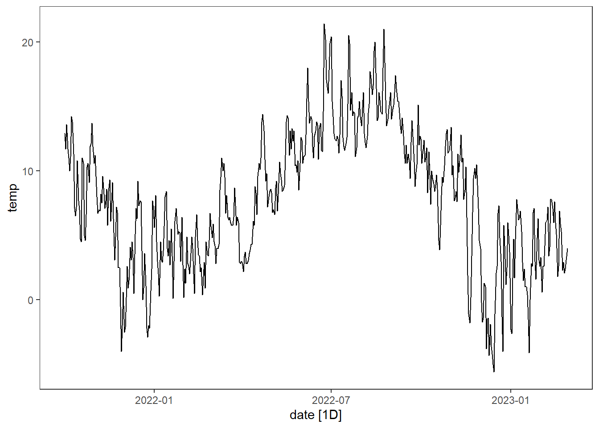

The point of this workshop is to get you familiarized with the fpp3 package and especially the tsibble object. This is the most important R structure of this course and we will therefore spend some time getting to know it better. The tsibble is the time series equivalent of a tibble object in the tidyverse. It is a data frame which is indexed by a time variable. To create a tsibble, we need to specify which column in the data is the time variable (the index variable). Here is an example, creating a tibble object from data on the temperature in Bergen:
library(fpp3) library(tidyverse)# read the data: temp <-read_csv2("https://raw.githubusercontent.com/holleland/BAN430/master/data/bergen_temp.csv")temp
# Convert date column from character to date and temp to numeric:temp <- temp %>%mutate(date =as.Date(date, format ="%d.%m.%Y"),temp =as.numeric(temp))temp
Once we have made our tsibble object, the fpp3 package (or really the tsibble package) has many useful functions we can apply to that object, such as plotting functions. For instance, we can create a timeplot of the Bergen temperatures, by the following code:
temp.ts %>%autoplot(temp)

This is a simple time series with only one variable (the daily mean temperature in Bergen). Often the data we study will consist of multiple time series. Then we need to provide information on which columns the identify the individual time series. This is called the key variable of the tsibble object. Let us consider an example with temperature in Bergen, Oslo, Trondheim and Stavanger.
Run the code above on your own. We will use the same data sets later, but for now, just check that you get the same figures.
Do Exercise 3. All the code you need is given in the exercise. Note, you do not need to download the csv-file, but can load it directly to R using this link (replacing the first line of code):
year state y
1 1997 Alabama 324158
2 1998 Alabama 329134
3 1999 Alabama 337270
4 2000 Alabama 353614
5 2001 Alabama 332693
6 2002 Alabama 379343
Continue with the temperature data from the largest cities in Norway. Create a
Timeplot,
Seasonal plot,
Seasonal subseries plot.
Aggregate the temperature time series for the 4 largest cities in Norway from daily to weekly and monthly average temperatures. Create two illustrative figures for each.
Temperatures in the Norwegian cities all follow the same seasonality (cold in winter - warm in summer). Create a graphic illustrating the correlation between these time series. Hint: GGally::ggpairs().
Create a autocorrelation plot of the temperature data for Bergen using default settings. Increase the maximum number of lags to 400. Interpret the latter plot. Is this a stationary time series?
Create a tsibble consisting of white noise (uncorrelated variables) of length 100. Create an autocorrelation plot for the time series you have simulated. Interpret the plot. Is this a stationary time series?
The Norwegian government has decided to work towards a goal of installing 30GW of offshore wind power. The two locations they have decided to start building the first wind parks is called Sørlige Nordsjø 2 and Utsira Nord. On Canvas, you find derived power production from modelled wind speed at these two locations on hourly time scale for 5 years.
Using the offshore wind power data, create illustrative figures for Utsira Nord and Sørlige Nordsjø 2 for different time scale aggregates (hourly, daily, weekly, monthly).
Can you a detect trend/cycle/season based on your figures?
What about the relationship between the two locations? Is the dependence linear?
Does your answer in (c) depend on the time scale you use?
If you were to decide where to build the first wind farm solely based on the data you have, which would you choose and why? Discuss with your neighbors.
Create a tsibble containing the daily wind power data from Sørlige Nordsjø 2. Decompose the time series into three components; trend-cycle T_t, season S_t and remainder R_t, using a suitable decomposition method. Why did you choose the method you did? Is there any seasonal/trend patterns in the data?
The data used in this exercise is the wholesale and retail sales index from Statistics Norway. More specifically, the data is an index for Retail trade, except of motor vehicles and motorcycles. Data starts in Jan 2000 to what is presently available from Statistics Norway.
Load the data using e.g. read.csv2 indicated below. Convert the month column to a yearmonth type and wholesale as a tsibble.